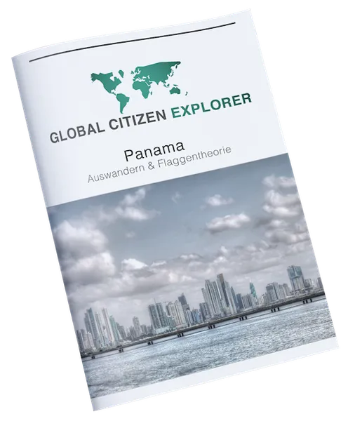

Global Citizen Explorer Mitgliedschaft
Produktprofil · Marktplatz-Daten 2026-10-14 · Verkaufsseiten-Recherche 2026-10-14 · Kategorien: Business & Investment
- Global Citizen Explorer Mitgliedschaft ist ein/e Download in Business & Investment, vertrieben über den Digistore24-Marktplatz von Anbieter serfanoo, gelistet seit 2018-07-20.
- Listenpreis $1413.17 (subscription) — Checkout, Auslieferung und Rückerstattungen laufen über Digistore24 selbst, nicht über den Anbieter.
- Käuferschutz: keine standardisierte Garantie-Formulierung gefunden — Rückerstattungsbedingungen vor der Zahlung auf der offiziellen Seite prüfen.
Interesse an Global Citizen Explorer Mitgliedschaft? Aktueller Preis, Boni und Garantiebedingungen finden Sie auf der offiziellen Seite des Anbieters:
Offizielle Verkaufsseite ansehen
Affiliate-Link (Werbung) — wir verdienen ggf. eine Provision, ohne Mehrkosten für Sie.

Marktplatz-Daten
| Produkttyp | Download |
|---|---|
| Preis | $1413.17 (Subscription) |
| Garantie/Rückgabe | Laut Verkaufsseite des Anbieters — vor dem Kauf auf der offiziellen Seite prüfen |
| Anbieter | serfanoo (gelistet seit 2018-07-20) |
Marktplatz-Beschreibung des Anbieters
Der Global Citizen Explorer ist ein exklusives Offshore Magazin und einzigartig im deutschsprachigen Raum! Es handelt sich dabei um ein monatliches oder jährliches Abo. Wir zeigen unseren Mitgliedern die besten Möglichkeiten weltweit auf, um ihr eigenes Business im Bereich Steuern, Vermögensaufbau, Vermögensschutz, Diversifizierung, Investements etc. legal zu optimieren. Das Produkt spezialisert sich auf Unternehmer und die Mittelschicht. Unsere Affiliate Seite findest Du hier: https://www.globalcitizenexplorer.com/affiliate/
Von der Verkaufsseite des Anbieters
Seitentitel: Global Citizen Explorer - Die Besten Optionen Weltweit - Global Citizen Explorer
Hauptüberschrift
MEHR FREIHEIT & WOHLSTAND DANK LEGALER INTERNATIONALISIERUNG
Abschnitts-Überschriften
- Mühelose Umsetzung Deiner internationalen Diversifizierung
- Erhalte tiefe Einblicke & verborgenes Wissen aus allen Bereichen der Flaggentheorie
- Der Global Citizen Explorer
- Wie unterscheiden sich die Inhalte zu unserem Blog?
- Sind die Inhalte auch anwendbar, wenn ich nicht auswandern möchte?
- Lege heute die Weichen für Deine internationale Zukunft
- Aktuelle Ausgabe
- Etliche bereits erschienene Ausgaben
- Und viele weitere Videoinhalte & Interviews
- Fragen und Antworten zum GCExplorer
Einstiegstext
WEBINAR AUFZEICHNUNG: Die größten Fehler die Du bei Deiner Internationalisierung begehen kannst, wie Du sie gekonnt umschiffst & welche wichtige Komponente die meisten komplett außer Acht lassen!
Noch nie war es so einfach Dich international zu Diversifizieren und sofort Deinen eigenen Plan B zu implementieren!
Im GCExplorer erfährst Du die Informationen, die Dir Regierungen, Think-Tanks & Eliten vorenthalten wollen, um Dir stillschweigend Deine Freiheit nehmen zu können!
Christoph Heuermann (Staatenlos.ch) und Sergio von Facchin (GoodbyeMatrix.com) inspirieren mit ihren Webseiten Tausende von Menschen und zeigen Möglichkeiten für wahre Kosmopoliten auf.
Fragen, die die Verkaufsseite beantwortet
- Ist dies eine Abofalle?
CTA-Buttons: „Startseite"
Recherche-Methode: rohes HTML · 2236 Wörter · Qualität: rich · recherchiert am 2026-10-14. Vollständige Recherche-Datei (MD) ↗
Anwendung — laut Anbieter
Der Plan B Elite Bereich wird in Zukunft natürlich stetig erweitert und Du bist so immer einen Schritt voraus.
Weitere Bilder (von der Verkaufsseite des Anbieters)
Bilder stammen von der offiziellen Verkaufsseite des Anbieters und zeigen das Produkt, wie es beworben wird.
Gut zu wissen
- Hoher Preis: $1413.17 ist eine erhebliche Ausgabe — prüfen Sie, ob es einen Zahlungsplan gibt, und vergleichen Sie zuerst die günstigeren Alternativen der Kategorie.
- Keine Garantie-Formulierung in unserer Recherche gefunden — bestätigen Sie das Rückgabefenster auf der offiziellen Seite, bevor Sie kaufen.
- Hinweise der Verkaufsseite (wörtlich, nicht von uns geprüft): „WEBINAR AUFZEICHNUNG: Die größten Fehler die Du bei Deiner Internationalisierung begehen kannst, wie Du sie gekonnt umschiffst & welche wichtige Komponente die meisten komplett außer Acht lassen!"
- Hinweise der Verkaufsseite (wörtlich, nicht von uns geprüft): „In unserem Plan B Elite Mitgliederbereich geben wir Dir nicht nur detaillierte Informationen zu den wichtigsten und interessantesten Möglichkeiten Deinen eigenen Plan B umzusetzen, sondern wir haben für Dich unsere Partneranwälte und Kanzleien interviewt."
- Hinweise der Verkaufsseite (wörtlich, nicht von uns geprüft): „Du erhältst die wichtigsten Informationen direkt im Mitgliederbereich, durch Interviews die wir zusammen mit unserem Partnernetzwerk geführt haben!"
Was ist Global Citizen Explorer Mitgliedschaft?
Global Citizen Explorer Mitgliedschaft ist ein/e download in der Kategorie Business & Investment des Digistore24-Marktplatzes, veröffentlicht von Anbieter serfanoo und im Verkauf seit 2018-07-20. Der Anbieter beschreibt es so: "Der Global Citizen Explorer ist ein exklusives Offshore Magazin und einzigartig im deutschsprachigen Raum! Es handelt sich dabei um ein monatliches oder jährliches Abo. Wir zeigen unseren Mitgliedern die besten Möglichkeiten weltweit auf, um ihr eigenes Busine" (Marktplatz-Beschreibung des Anbieters, leicht gekürzt).
Global Citizen Explorer Mitgliedschaft Preis: was Sie zahlen
Der Marktplatz listet Global Citizen Explorer Mitgliedschaft zum $1413.17 Preis (subscription). Digistore24 fügt im Checkout die gesetzliche Steuer Ihres Landes hinzu — dort sehen Sie den Endbetrag vor der Zahlung. Eine separate Plattformgebühr gibt es nicht; Anbieter können eigene Upsells nach dem Checkout anbieten.
Global Citizen Explorer Mitgliedschaft Rückerstattung und Geld-zurück-Garantie
Wir haben keine standardisierte Garantie-Formulierung auf der Verkaufsseite gefunden. Rückerstattungen für Digistore24-Käufe laufen über die Plattform: Antrag über den Support-Link in Ihrer Bestell-E-Mail, innerhalb des Garantiezeitfensters, das im Checkout angezeigt wird. Praktischer Rat: Entscheiden Sie innerhalb des Fensters — wenn das Produkt unter den Erwartungen bleibt, erstatten lassen statt irren lassen.
Mechanik im Detail: So funktionieren Digistore24-Rückerstattungen.
Für wen ist Global Citizen Explorer Mitgliedschaft geeignet?
Basierend auf der Business & Investment-Einordnung und der subscription-Abrechnung richtet sich Global Citizen Explorer Mitgliedschaft an Käufer, die business & investment-Lösungen suchen und ein Budget für einen Premium-Kauf eingeplant haben. Der ehrliche Test ist nicht die Kategorie, sondern Ihre eigene Situation: Werden Sie es realistisch innerhalb des Garantiefensters nutzen? Wenn ja, ist der Preis eine Investition; wenn nein, ist er Ballast — unabhängig von der Qualität.
Ist Global Citizen Explorer Mitgliedschaft seriös? Was Sie vor dem Kauf prüfen
Wir bewerten keine Seriosität — das kann niemand, ohne das Produkt zu nutzen. Prüfbare Punkte, alle auf dieser Seite: die Marktplatz-Historie des Anbieters (im Verkauf seit 2018-07-20), die wörtlichen Verkaufsseiten-Auszüge unten (gekennzeichnet als Anbieteraussagen — deren Werbung, nicht unsere Empfehlung), die Garantiebedingungen im Checkout und die Auslieferungsart. Vorsichtsignale bei jedem Angebot: Countdown-Dringlichkeit gepaart mit vagen Rückerstattungsbedingungen, Testimonials ohne Datum und Anbieterseiten, die den Preis bis zum Checkout verstecken.
Wie kommen Sie nach dem Kauf an Global Citizen Explorer Mitgliedschaft?
Der Checkout läuft über Digistore24. Nach der Zahlung: Download-Produkte werden digital geliefert: sofort nach dem Checkout erhalten Sie Downloadlinks (oder Zugang zu einem Mitgliederbereich) — kein physischer Versand. Bewahren Sie die Bestell-E-Mail auf — sie ist Ihr Schlüssel zum/d zur download, zu Rückerstattungsanträgen und zum Digistore24-Käufersupport.
Global Citizen Explorer Mitgliedschaft Erfahrungen: so recherchieren Sie richtig
Die meisten „Erfahrungsberichte" zu Marktplatz-Produkten sind Affiliate-Inhalte — einschließlich Seiten wie dieser, die an Käufen mitverdienen. Behandeln Sie jeden Bericht (auch unseren) als Ausgangspunkt und prüfen Sie gegen Primärquellen: die Verkaufsseite des Anbieters, die Digistore24-Rückerstattungsrichtlinie und — für business & investment — unabhängige Communities außerhalb des Affiliate-Ökosystems. Auf dieser Seite sind die Verkaufsseiten-Auszüge unten wörtlich zitiert, damit Sie die Aussagen des Anbieters bewerten können, ohne wegzuklicken.
Wie Sie Global Citizen Explorer Mitgliedschaft sicher kaufen
- Öffnen Sie die offizielle Verkaufsseite und lesen Sie das vollständige Angebot.
- Bestätigen Sie Endpreis und Garantiezeitfenster auf der Digistore24-Kassenseite — sie ist bindend, kein Vergleichsportal.
- Zahlen Sie innerhalb des Digistore24-Checkouts (niemals per Überweisung oder Off-Platform-Links).
- Speichern Sie die Bestellbestätigung; notieren Sie die Rückerstattungsfrist im Kalender.
- Prüfen Sie zügig. Der Digistore24-Käufersupport hilft, wenn der Anbieter nicht reagiert.
Vollständiges Recherche-Archiv für dieses Produkt (Markdown: kompletter Marktplatz-Datensatz + wörtliche Verkaufsseiten-Auszüge): Global Citizen Explorer Mitgliedschaft — vollständiges Datenarchiv (Markdown-Datei: 26576-global-citizen-explorer-mitgliedschaft.md).
- Listenpreis & Abrechnung — Quelle: offizielle Digistore24-Marktplatz-API, Stand 2026-10-14. Maßgeblich für den aktuellen Preis ist immer die Kassenseite.
- Verkaufsseiten-Zitate — Quelle: https://www.globalcitizenexplorer.com/, abgerufen 2026-10-14 (Methode: rohes HTML). Verify: offizielle Seite öffnen.
- Garantie / Rückgabe — vom Anbieter festgelegt; vor dem Kauf auf der Verkaufsseite bestätigen.
- Nicht von uns geprüft: Produktqualität, Ergebnisse, Testimonials — kein Praxistest für dieses Listing durchgeführt.
Häufige Fragen zu Global Citizen Explorer Mitgliedschaft
Antworten aus dem Marktplatz-Snapshot (2026-10-14) und der Verkaufsseiten-Recherche (2026-10-14); Anbieteraussagen sind inline gekennzeichnet.
Was ist Global Citizen Explorer Mitgliedschaft?
Global Citizen Explorer Mitgliedschaft ist ein Angebot des Typs „Download" im Digistore24-Marktplatz, Anbieter: serfanoo, gelistet seit 2018-07-20. Eingepflegt unter Business & Investment. Digistore24 wickelt Checkout, Lieferung und Rückgaben ab.
Wie viel kostet Global Citizen Explorer Mitgliedschaft?
Der Digistore24-Marktplatz listet es für $1413.17 (subscription). Preise legt der Anbieter fest und können sich ändern — der Marktplatz-Eintrag oben zeigt den Schnappschuss; die offizielle Verkaufsseite zeigt den aktuellen Preis.
Gibt es eine Geld-zurück-Garantie für Global Citizen Explorer Mitgliedschaft?
Unsere Verkaufsseiten-Recherche hat keine explizite Garantie-Formulierung gefunden. Viele Digistore24-Produkte bieten 60 Tage Geld-zurück, aber das legt jeder Anbieter selbst fest — bestätigen Sie es auf der offiziellen Verkaufsseite, bevor Sie kaufen.
Ist Global Citizen Explorer Mitgliedschaft seriös?
Wir bewerten keine Seriosität — wir veröffentlichen überprüfbare Zahlen: Anbieter serfanoo (gelistet seit 2018-07-20), mit der vollständigen Verkaufsseiten-Recherche archiviert auf dieser Seite (Anbieteraussagen als solche gekennzeichnet). Lesen Sie unsere 6-Punkte-Bewertungsmethode und entscheiden Sie anhand der Zahlen — oder diskutieren Sie Global Citizen Explorer Mitgliedschaft auf GitHub.
Wo kann ich Global Citizen Explorer Mitgliedschaft sicher kaufen?
Nur über die offizielle Verkaufsseite, die auf dieser Seite verlinkt ist (Checkout und Rückgaben laufen über Digistore24). Prüfen Sie dort Preis und Garantie vor der Bestellung. Der Link ist ein Affiliate-Link — der Kauf unterstützt diese Website ohne Mehrkosten für Sie.
Wie erhalte ich Global Citizen Explorer Mitgliedschaft nach der Zahlung?
Der Checkout läuft über Digistore24: Nach der Zahlung erhalten Sie Zugangsdaten und Ihr Abo-Dashboard. Lieferdetails für diesen Produkttyp: Download-Produkte werden digital geliefert: sofort nach dem Checkout erhalten Sie Downloadlinks (oder Zugang zu einem Mitgliederbereich) — kein physischer Versand. Bei Problemen kann der Digistore24-Käufersupport Ihre Bestellung wiederherstellen.
Alle 50 Käuferfragen zu Business & Investment — das komplette Kategorie-FAQ.
Global Citizen Explorer Mitgliedschaft auf Reddit diskutieren
In Community-Threads vergleichen echte Käufer Erfahrungen. Wir verlinken Communities, keine einzelnen Posts — Threads verschwinden, Subreddits bleiben:
- r/Finanzen — deutschsprachige Community mit Diskussionen zu business & investment.
- Reddit-Suche nach „Global Citizen Explorer Mitgliedschaft" — Live-Ergebnisse, von uns nicht beeinflusst.
- Top-„Erfahrungs"-Treffer dieses Jahr — selbst nach Aktualität filtern.
Passendes auf Amazon.de
Physische Produkte und Zubehör, die häufig zusammen mit Global Citizen Explorer Mitgliedschaft gekauft werden:
- Marketing Bücher auf Amazon.de — Top-Ergebnisse, Amazon-Ranking.
- Bestseller: Marketing Bücher — live Liste von Amazon, von uns nicht kuratiert.
Werbung: Als Amazon-Partner verdient DigistorePicks DE an qualifizierten Käufen (Partner-tag adminstorede-21). Amazon setzt eigene Preise und Provisionen (niedrige einstellige Prozente — weit unter den 30–75% der Digistore24-Anbieter). Amazon ist ein Convenience-Angebot für Sachprodukte, kein Ersatz für das digitale Produkt oben.
Ähnliche Angebote in Business & Investment

SHOWUP 3 Monate Strategie- und Umsetzungsbegleitung für dein Business. Du steckst Zeit und Arbeit in deinen Content, feilst an Angeboten und denkst über deine P

Bewerbe die Nummer #1 Online NFT & Web3 Masterclass für NFT & Web3 Investoren und Anleger. Beschreibung: Eine Masterclass. Eine Plattform. Alles dabei.

1.048,32 € Provision bei erfolgreichem Verkauf – ohne den Abschluss selbst führen zu müssen. Du erreichst Menschen mit Immobilienvermögen, Unternehmer, Kapitala

Verdiene 50% Provision mit der #1 Masterclass für Online-Kurs-Business Promote das kostenlose Online Training „Online Kurse erstellen und passiv verkaufen mit K
Weitere Angebote von serfanoo
Online Videokurs für Hobbywinzer bzw. Weinmacher. In der Schritt-für-Schritt Anleitung wird genau erklärt, wie man seinen eigenen Wein Zuhause produzieren kann.

In unserer Global Citizen Explorer Ausgabe über Panama, erfahren Leser wie sie in Panama ihr Wohnsitz nehmen können und wie sie in diesem Land als Unternehmer s
Ähnliche Preislage in Business & Investment

Expert Scaling System — Das komplette System für automatisierte Onlinekurs- und Coaching-Verkäufe. Für Coaches, Trainer und Berater. Kurzbeschreibung: 997€-Komp

Viele haben ein gutes Angebot – aber verkaufen es „nett“ statt überzeugend. Das Viele haben ein gutes Angebot – aber verkaufen es „nett“ statt überzeugend. Das

High-Ticket Bestseller: Das Marketing-Komplettsystem – 10 PDF-Guides für 360° Erfolg Einmal verkaufen – 500 € Provision verdienen Bonus: 100% Steuerlich absetzb

Das AI Business System™ ist ein geführtes Copy-&-Paste-System für Menschen, die mit künstlicher Intelligenz ein eigenes digitales Produkt aufbauen wollen –
Ähnliche Suchanfragen
Wo Sie es sich ansehen können
Wo Sie es sich ansehen können
Aktuelle Preise, Garantie und Boni finden Sie auf der offiziellen Verkaufsseite:
Offizielle Verkaufsseite ansehen
Das ist ein Affiliate-Link (Werbung) — kaufen Sie darüber, verdienen wir ggf. eine Provision, ohne Mehrkosten für Sie.
Quellen & weiterführende Informationen
- Offizielle Verkaufsseite (aktueller Preis, Garantie, Boni): www.globalcitizenexplorer.com/ (Affiliate-Link)
- Öffentliche Digistore24-Produktseite: checkout-ds24.com/product/233950
- Vollständige Recherche-Datei (Markdown, versioniert): content/products/26576-global-citizen-explorer-mitgliedschaft.md
- Affiliate-Supportseite des Anbieters: www.globalcitizenexplorer.com/2429846287542984274026zf6t2d6e
- Marktplatz-Kategorie: Business & Investment
Wie wir Produkte wie Global Citizen Explorer Mitgliedschaft bewerten
Sechs Prüfungen, ausschließlich mit offiziellen Marktplatz-Zahlen. Die vollständige Bewertungsmethode lesen · unsere Recherche-Standards & Kennzeichnung.
Fragen oder eigene Erfahrungen mit Global Citizen Explorer Mitgliedschaft?
Praxis-Tests veröffentlichen wir erst, nachdem wir ein Produkt selbst gekauft haben — aber Ihre Erfahrung hilft anderen Lesern: Diskussion zu Global Citizen Explorer Mitgliedschaft auf GitHub starten/verfolgen. Falsche Zahl gefunden? Korrektur melden — jede Seite zeigt ihre Datenstände, Korrekturen gelten für die ganze Website.